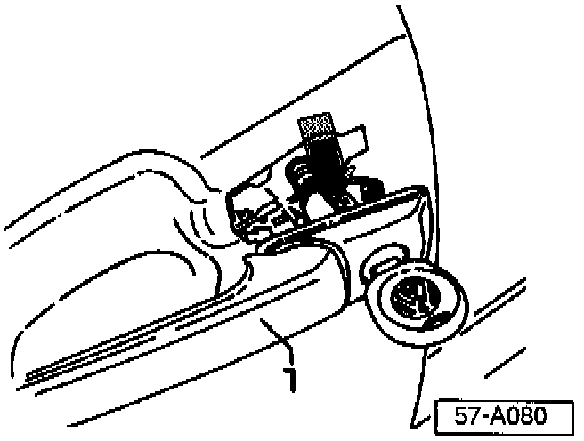

Key Code - Number, Location
Group: 57Number: 97-02
Date: Jan. 21, 1997
Subject:
Key Code Number, Location
Model(s):
Golf, GTI, Jetta 1996 -->
Service
If a new key must be cut using the door lock key code, code can be obtained using the following procedure.

- Remove drivers door handle -1-, -> Door handle, removing and installing page 57-19 of Repair Manual Body-Interior Body Exterior W42 011 294 114A Edition 03.96.
^ Cut key using code found at -arrow-.
- Reinstall door handle.